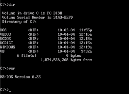
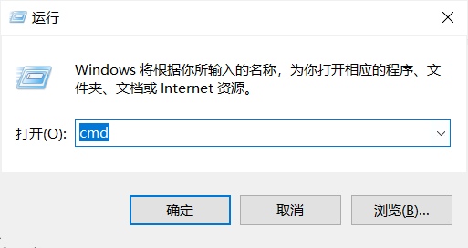
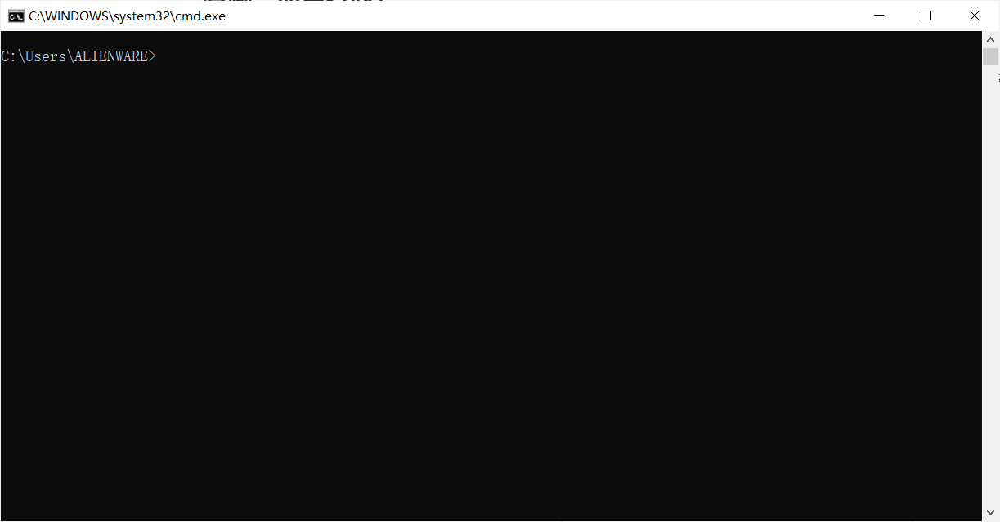
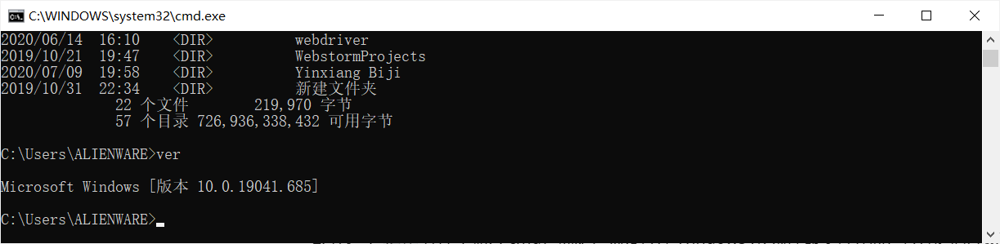
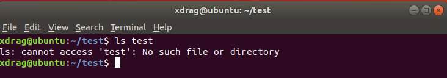
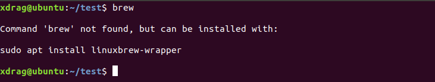

Linux命令行小白入门教程
本篇文章的目标读者是 Linux 小白用户，也就是从未接触过 Linux，对于命令行是什么都不了解的新手~ 是相当基础的新手村教程思密达~ 对于 Linux 有一定了解的可以不用往下继续看啦 : )
什么是命令行？
命令行，英文名是 command line，你看，翻译过来是不是就是 命令 行，一个字都不错！那么什么是命令行呢？
你在看一些和黑客有关的电影的时候是不是经常看到这样的场景：电脑屏幕上黑漆漆的，一些不知道是什么东西的文字在屏幕上滚动，比如下面这张图

其实，这就是黑客在使用命令行就行一些 hacking 的操作，比如通过一些工具扫描远程主机的端口信息、连接到远程主机、编写一些程序、登录远程主机、获取远程主机的控制权等等（这些我是都不会啦，哈哈哈，我只会一点命令行的皮毛）
在没有图形界面时，命令行是人们和电脑交互的主要方式，通过输入一些字符，执行一些程序。但是这个对于普通用户十分不用好，图形总是比文字更加生动形象，所以图形界面的出现使得电脑开始普及。但是对于程序员来说，命令行是必须要了解的工具之一哦~ 使用命令行能做很多图形界面做起来不是很方便的事情！
有哪些命令行呀！
Windows 上的命令行
Windows 在最初是 DOS 系统，开机之后就进入一个黑黑的界面，用户可以在这个黑黑的界面输入命令，回车执行。比如下面这个图，
dir命令会显示当前位置（C:\）的文件，ver命令则会显示 DOS 的版本信息。
这个黑黑的界面看起来是不是有点熟悉，如果不觉得熟悉也没关系，尝试一下下面的操作
按
win + r（windows 键和 r 键一起按），会出现运行程序在这个
运行程序中输入 cmd，确定，就会打开 Windows 系统的 命令行界面，打开之后应该是下面这个样子：尝试在这个 cmd 程序中输入
ver，然后按回车，看看有什么输出。再试一下输入dir，然后回车，看看有什么输出！ver输出了 Windows系统 版本信息，dir 列出了C:\Users\ALIENWARE下的文件！ 真棒！
Linux 上的命令行
在 Linux 上命令行也被称作
terminal， 有英文自然会有中文，所以也会有人叫做终端，初次之外还有诸如sh,shell,bash,dash,zsh等等的称呼，叫法虽然不一样，但是大致上都是相似的。shell是terminal的一种，而sh、bash、dash、zsh则是不同的shell。之所以会有这么多不同的shell，主要是因为 Linux 是完全开源的操作系统，在 Linux 内核上，有许多人添加了不同的软件（桌面、浏览器、下载工具、软件管家等等）形成了不同的发行版系统（比如 Ubuntu、RedHat、CentOS、ArchLinux 等等），在这些不同的发行版 Linux 系统中，也就根据不同的需求制作了不太一样的shell。不过虽然名字不太一样，大体上还是相似滴。以 Ubuntu 18.04 操作系统为例 （不是 18.04 的也没关系）
- 使用鼠标右键
Open terminal打开终端，打开后会出现和下图类似的界面。
- 尝试输入
ls命令，看看会输出什么！想一想ls和 Windows 的 cmd 哪一条命令比较像？ 哈哈哈，你也太棒了！
- 使用鼠标右键
VScode 的命令行
在 VScode 上的命令行实际上是打开了系统的命令行，不同的是 VScode 的命令行会嵌入 VScode 中，但是效果其实都是一样的哦~
命令行的基本介绍（以ubuntu bash为例）
打开命令行之后，你就进入了一个目录中（可以理解成文件夹中）。这就像你打开了文档管理器，比如你打开了
test文件夹，这个文件夹下面有dir文件夹，还有一个readme.txt。1
2
3
4
5test文件夹下：
├── dir
│ ├── dir.txt
│ └── script.sh
└── readme.txt在文档管理器中，我现在处于
test文件夹，我想返回上一级文件夹，就可以通过点击上级文件夹。而如果我想去dir文件夹，就可以双击dir文件夹。而在命令行中，也是可以做到同样的事情的！比如，如果我想返回上一级文件夹，我就可以输入以下命令
1
cd ..
这样，我就会回到上一级文件夹（其实叫做目录更准确一点，但是你不必纠结，windows 里叫做文件夹，而 Linux 里一般叫做目录）。这里
..的意思其实就是上一级目录。除此以外.代表当前目录。输入下面的指令练习一下吧！1
2
3
4
5
6
7
8# 以#开头的是注释，在命令行里输入不会有任何效果。
# 当前目录是 test/
cd .. # 当前目录是 test的父目录
cd . # 当前目录还是 test 的父目录
cd test # 当前目录是 test/
cd dir # 档期那目录是 test/dir
cd .. # 当前目录又变成了test
cd ../test/dir/.. # 想一想，这条命令执行完之后，当前目录是什么？ 你肯定可以想出来！在命令行里执行的指令其实都是一个程序，比如
cd其实是一个程序，bash在发现你输入的是cd后，就会去找这个程序，如果找到了就会执行这个程序，如果没有找到，就会跟你抱怨：“这个程序我没有找到！”，脾气好一点的还会跟你提一些建议，“你是不是输错了”，也有时候会提醒你，“你没有安装这个程序，可以通过以下方式安装该程序。”
命令行基本命令介绍（以 ubuntu bash 为例）
命令行里可以执行很多指令，每个指令都是一个程序，只要 bash 知道这个程序存在，那么你就可以输入这条指令。今天我们先来学习一下几个强大但又不复杂的指令吧！
ls
ls指令可以列出当前目录下的所有文件。ls其实是list的简称，程序员在起名字的时候都会尽量简单以避免打太多字，哈哈哈。这个指令可以在你不知道当前目录下有哪些文件的时候使用。
1
2
3
4
5test文件夹下：
├── dir
│ ├── dir.txt
│ └── script.sh
└── readme.txt还是以这个
test文件夹为例，输入以下命令试一试！1
2
3
4
5
6
7
8
9# 当前目录 test
ls
# > dir readme.txt
ls dir
# > dir.txt script.sh
ls --help
# 输出了 ls 命令的帮助信息
# 哇！ 现在屏幕都是乱七八糟的信息，太烦了，我想清理屏幕！
clear # 这个命令可以将bash的输出全部清除~聪明的你肯定已经发现了，
ls指令后面可以跟着目录，这样会把那个目录的文件信息罗列出来~cd
cd命令是change directory的简称，可以在命令行里切换目录。cd 的强大你应该已经了解啦，我就不多介绍了~mkdir
mkdir命令是make directory的简称，顾名思义，这个命令时创建目录（文件夹）的。快来使用下面的命令尝试一下1
2
3
4
5
6
7
8
9
10
11# test/ 目录下
mkdir dir1
ls
# > dir dir1 readme.txt
ls dir1
# > empty 没有输出，因为 dir1 是空文件夹
mkdir dir1/dir1
ls
# > dir dir1 readme.txt
ls dir1
# > dir1 刚刚创建的 dir1/dir1 出现了！touch
touch命令可以用于创建普通文件（不是目录的文件），touch 命令后面要跟着文件的名称哦~1
2
3
4
5
6
7# test/ 目录下
touch test.txt
ls
# > dir dir1 readme.txt test.txt
touch test
ls
# > dir dir1 readme.txt test test.txt真棒！ 你已经学会如何创建文件、文件夹、查看文件夹里的文件啦！可是刚创建了几个文件，想要删除文件怎么办呢？看看下面的
rm命令吧！rm
rm命令时remove的简称，顾名思义是删除的意思，可以用来删除指定的文件/目录1
2
3
4
5
6
7
8
9
10# test 目录下
ls
# > dir dir1 readme.txt test test.txt
rm test test.txt # 删除 test、test.txt 文件
ls
# > dir dir1 readme.txt
rm dir1
# > rm: cannot remove 'dir1/': Is a directory
ls
# > dir dir1 readme.txt咦，奇怪，我想要删除
dir1文件夹，可是 bash 说了一句rm: cannot remove 'dir1/': Is a directory和之前好像不太一样呢，然后ls查看dir1还是存在啊，怎么回事！这是因为，
rm一般情况下只能删除普通文件，也就是不是目录的文件。那要怎么删除目录文件呢？1
2
3
4
5
6# test目录下
ls
# > dir dir1 readme.txt
rm -r dir1
ls
# > dir readme.txt啊哈！成功删除了，真棒！
rm -r可以删除指定的目录！学会啦！
命令行后续学习
后续的学习就需要勇士自己探索啦，就像打游戏，怎么点技能，怎么加天赋都需要你自己摸索才有意思，不一样的是，打游戏培养的是游戏角色，学习命令行，培养的是勇士自己！
注意命令行的信息，仔细阅读，如果出现了和正确情况不一致的信息，命令行的都会提示你的。比如下面的图
bash 告诉我们
cannot access 'test': No such file or directory这句英文的意思就是无法访问test，没有这个文件或目录。再比如下面这个图，我输入了
brew命令后，bash 告诉我这些信息。从这些信息中可以看到，bash 找不到这个brew命令，同时还告诉我可以通过sudo apt install linuxbrew-wrapper来安装brew！ bash 真是太贴心了！有的时候，bash 的报错信息我读不懂，怎么办呢？ 当遇到这种情况的时候，就可以将报错信息复制下来，然后去 google/百度上搜索啦！
总之，命令行的学习需要探索，需要查各种攻略，尝试各种技能搭配，相信一定能学好的！